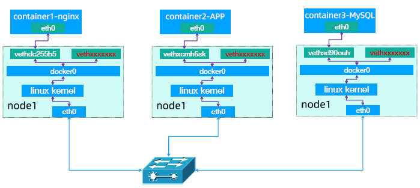
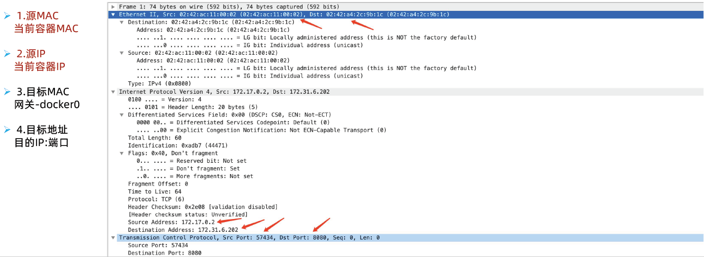
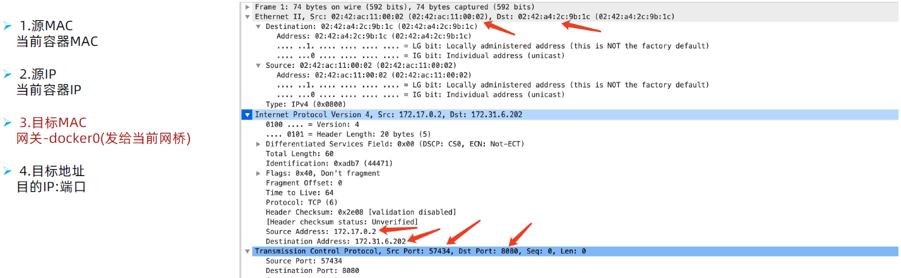
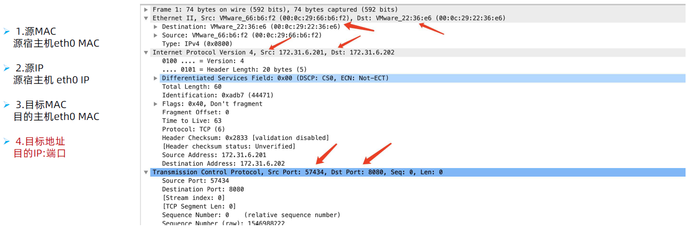
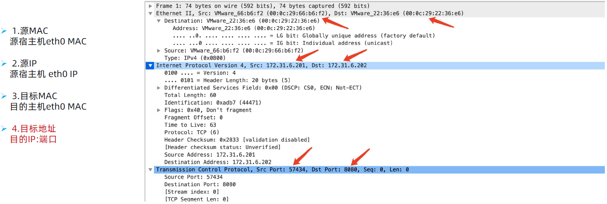
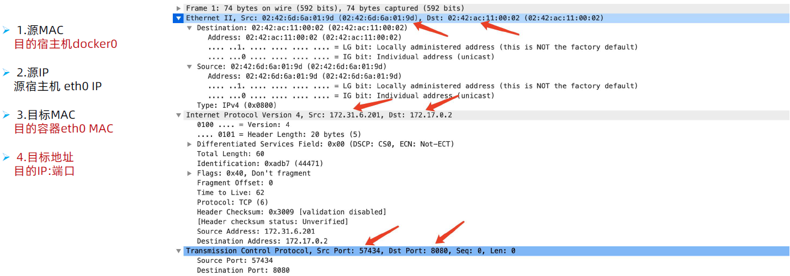
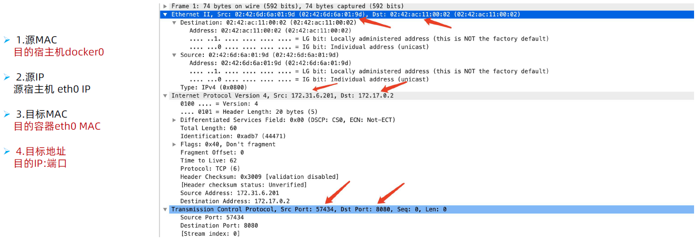

Docker的网络有多种模式,但在单机docker环境下主要使用bridge模式。
Docker网络：
Docker服务安装完成之后，默认在每个宿主机会生成一个名称为docker0的网卡其IP地址都是172.17.0.1/16，并且会生成三种不能类型的网 络，如下：
root@docker-server1:~# ifconfig docker0
docker0: flags=4163<UP,BROADCAST,RUNNING,MULTICAST> mtu 1500
inet 172.17.0.1 netmask 255.255.0.0 broadcast 172.17.255.255
inet6 fe80::42:d9ff:fe20:16d9 prefixlen 64 scopeid 0x20<link>
ether 02:42:d9:20:16:d9 txqueuelen 0 (Ethernet)
RX packets 1920 bytes 101778 (101.7 KB)
RX errors 0 dropped 0 overruns 0 frame 0
TX packets 2203 bytes 16910412 (16.9 MB)
TX errors 0 dropped 0 overruns 0 carrier 0 collisions 0
另外会额外创建三个默认网络，用于不同的使用场景：
root@docker-server1:~# docker network list
NETWORK ID NAME DRIVER SCOPE
#桥接网络，默认使用的模式，容器基于SNAT进行地址转换访问宿主机以外的环境
438a9be14ef8 bridge bridge local
#host网络，直接使用宿主机的网络(不创建net namespace)，性能最好，但是容器端口不能冲突
4c026356e4d1 host host local
#空网络，容器不会分配有效的IP地址(只有一个回环网卡用于内部通信)，用于离线数据处理等场景
8d70da095b8e none null local
bridge模式：
docker的默认模式即不指定任何模式就是bridge模式，也是目前使用比较多的网络模式，此模式创建的容器会为每一个容器分配自己的网络 IP等信息，并将容器连接到一个虚拟网桥与外界通信。
# docker network inspect bridge
# docker run -it -d --name nginx-web1-bridge-test-container -p 80:80 --net=bridge nginx:1.20.2
host模式：
host模式就是直接使用宿主机的IP地址，创建的容器如果指定了使用host模式，那么新创建的容器不会创建自己的虚拟网卡，而是直接使用宿 主机的网卡和IP地址，因此在容器里面查看到的IP信息就是宿主机的信息，访问容器的时候直接使用宿主机IP+容器端口即可，而且某一个端 口一旦被其中一个容器占用那么其它容器就不能再监听此端口，不过容器的其它资源比如容器的文件系统、容器系统进程等还是基于 namespace相互隔离。
此模式的网络性能最高，但是各容器之间端口不能相同，适用于运行容器端口比较固定的业务
# docker run -it -d --name nginx-web1-host-test-container -p 80:80 --net=host nginx:1.20.2
root@docker-server1:~# docker exec -it 0092ca554f bash
root@docker-server1:/# apt update && apt install net-tools
root@docker-server1:/# ifconfig
root@docker-server1:/# netstat -tanlp
none模式：
none模式就是无IP模式，在使用none 模式后，docker 容器不会进行任何网络配置，其没有网卡、没有IP也没有路由，因此默认无法与外界通 信，需要手动添加网卡配置IP等，所以极少使用.
docker run -it -d --name nginx-web1-none-test-container -p 80:80 --net=none busybox sleep 10000000
docker exec -it 3c54e90c209a sh
/ # ifconfig
lo Link encap:Local Loopback
inet addr:127.0.0.1 Mask:255.0.0.0
UP LOOPBACK RUNNING MTU:65536 Metric:1
RX packets:0 errors:0 dropped:0 overruns:0 frame:0
TX packets:0 errors:0 dropped:0 overruns:0 carrier:0
collisions:0 txqueuelen:1000
RX bytes:0 (0.0 B) TX bytes:0 (0.0 B)
/ # ping 223.6.6.6
PING 223.6.6.6 (223.6.6.6): 56 data bytes
ping: sendto: Network is unreachable
container模式：
Container模式即容器模式，使用参数 --net=container:目标容器名称/ID 指定,使用此模式创建的容器需指定和一个已经存在的容器共享一个网络namespace，而不会创建独立的namespace，即新创建的容器不会创建自己的网卡也不会配置自己的IP，而是和一个已经存在的被指定的 目标容器共享对方的IP和端口范围，因此这个容器的端口不能和被指定的目标容器端口冲突，除了网络之外的文件系统、用户信息、进程信息 等仍然保持相互隔离，两个容器的进程可以通过lo网卡及容器IP进行通信。
# docker run -it -d --name nginx-container -p 80:80 --net=bridge nginx:1.22.0-alpine
# docker run -it -d --name php-container --net=container:nginx-container php:7.4.30-fpm-alpine
分别进入容器验证IP地址信息
验证net namesapce：
# ls /var/run/netns/netns
# ln -s /var/run/docker/netns/* /var/run/netns/
# ip netns list
default
# ip netns exec 10844980eee7 ip a
72: eth0@if73: <BROADCAST,MULTICAST,UP,LOWER_UP> mtu 1500 qdisc noqueue state UP group default
link/ether 02:42:ac:11:00:02 brd ff:ff:ff:ff:ff:ff link-netns default
inet 172.17.0.2/16 brd 172.17.255.255 scope global eth0
valid_lft forever preferred_lft forever
Docker 网络模型与跨主机的容器间通信原理与过程展示和分析
1.1：Host 模式：
-
优点：
- 每个容器没有独立的net namespace，而是直接使用宿主机网卡通信
- 服务器的端口只能被一个容器监听，其它容器再监听会出现端口冲突
- 网络吞吐性能强(不需要iptables做目标地址和源地址转换)
- 适用于在多台主机联合部署集群服务(redis cluster、elasticsearch cluster等)
-
缺点：
- 单台主机运行较多容器的时候端口分配不好记录
- 单台主机运行相同服务的时候端口的冲突问题
1.2：Bridge模式：

-
优点：
- 基于net namespace为每个容器实现独立的网络空间(每一个容器一个独立的IP)
- 同一个服务器的不同容器不会出现容器中的服务监听地址冲突
- 同一个服务器的不同容器不会出现容器中的服务监听端口冲突
- 适用于在单台主机运行多容器的场景(Harbor、LNMP以及基于docker-compsoe部署的由多容器组成的单机项目)
-
缺点：
- 需要维护每个服务的通信端口
- 高并发的场景会有单节点瓶颈
- 横向扩容需要在每台节点部署相同的服务
- 进出宿主机的报文通过iptables进行转发，高并发的项目会有瓶颈
-
创建测试容器:
root@docker-server1:~# docker run -it -d -p 80:80 nginx:1.20.2-alpine
root@docker-server1:~# iptables-save | grep 80
-A DOCKER -d 172.17.0.2/32 ! -i docker0 -o docker0 -p tcp -m tcp --dport 80 -j ACCEPT
-A POSTROUTING -s 172.17.0.2/32 -d 172.17.0.2/32 -p tcp -m tcp --dport 80 -j MASQUERADE
-A DOCKER ! -i docker0 -p tcp -m tcp --dport 80 -j DNAT --to-destination 172.17.0.2:80
root@docker-server2:~# docker run -it -d -p 8080:8080 tomcat:7.0.93-alpine
root@docker-server2:~# iptables-save | grep 8080 #验证iptables规则
-A DOCKER -d 172.17.0.2/32 ! -i docker0 -o docker0 -p tcp -m tcp --dport 8080 -j ACCEPT
-A POSTROUTING -s 172.17.0.2/32 -d 172.17.0.2/32 -p tcp -m tcp --dport 8080 -j MASQUERADE
-A DOCKER ! -i docker0 -p tcp -m tcp --dport 8080 -j DNAT --to-destination 172.17.0.2:8080
网络bridge抓包：
1.容器产生请求报文：
root@docker-server1:~# docker exec -it 6c sh #进入容器向对端主机发起请求
/ # curl <http://172.31.6.202:8080>
root@docker-server1:~# tcpdump -nn -vvv -i vethdc255b5 -vvv -nn ! port 22 and ! arp and ! port 53 -w 1-
vethdc255b5.pcap

2.docker0-收到容器的请求报文并转发给宿主机：
root@docker-server1:~# tcpdump -nn -vvv -i docker0 -vvv -nn ! port 22 and ! arp and ! port 53 -w 2-docker0.pcap

3.源主机eth0：
root@docker-server1:~# tcpdump -nn -vvv -i eth0 -vvv -nn ! port 22 and ! arp and ! port 53 -w 3-eth0.pcap

4.目的主机eth0-收到请求报文：
root@docker-server2:~# tcpdump -nn -vvv -i eth0 -vvv -nn ! port 22 and ! arp and ! port 53 -w 4-eth0.pcap

5.目的主机docker0：
root@docker-server2:~# tcpdump -nn -vvv -i docker0 -vvv -nn ! port 22 and ! arp and ! port 53 -w 5-docker0.pcap

6.目的主机容器虚拟机网卡：
root@docker-server2:~# tcpdump -nn -vvv -i veth91f6e6a -vvv -nn ! port 22 and ! arp and ! port 53 -w 6-
veth91f6e6a.pcap

同宿主机总结：
1、同宿主机的容器通信，在docker0实现报文转发，不需要经过宿主机的eth0。
跨宿主机通信
1、源容器产生请求报文发给网关docker0
2、docker0检查报文的目的IP，如何是本机就直接转发，如果不是本机就转发给宿主机。
3、目的宿主机收到报文后检查路由表，将源地址替换为本机IP并发送报文。
4、目的主机收到请求报文，检查目的IP后将报文转发给docker0。
5、docker0检查目的IP后匹配MAC地址表，将报文发送给目的MAC的容器。
1.3：修改docker默认子网范围
修改docker的默认IP地址范围：
root@docker-server1:~# vim /lib/systemd/system/docker.service
ExecStart=/usr/bin/dockerd -H fd:// --containerd=/run/containerd/containerd.sock --bip=10.10.0.1/24
root@docker-server1:~# systemctl daemon-reload && systemctl restart docker
root@docker-server2:~# vim /lib/systemd/system/docker.service
ExecStart=/usr/bin/dockerd -H fd:// --containerd=/run/containerd/containerd.sock --bip=10.20.0.1/24
root@docker-server2:~# systemctl daemon-reload && systemctl restart docker
容器的跨主机通信：
在宿主机添加静态路由，将去往的目的容器网关(下一跳)指向目的容器所在的宿主机eth0网卡：
root@docker-server1:~# route add -net 10.20.0.0/24 gw 172.31.6.202 #去往10.20.0.0/24的下一跳是172.31.6.202
root@docker-server1:~# iptables -A FORWARD -s 172.31.0.0/21 -j ACCEPT #允许响应报文的转发
root@docker-server2:~# route add -net 10.10.0.0/24 gw 172.31.6.201
root@docker-server2:~# iptables -A FORWARD -s 172.31.0.0/21 -j ACCEPT
root@docker-server1:~# docker exec -it 6c10dcf457d8 sh
/ # ifconfig #当前容器ip
• eth0 Link encap:Ethernet HWaddr 02:42:0A:0A:00:02
• inet addr:10.10.0.2 Bcast:10.10.0.255 Mask:255.255.255.0
• UP BROADCAST RUNNING MULTICAST MTU:1500 Metric:1
/ # ping 10.20.0.2 #测试容器跨主机通信
• PING 10.20.0.2 (10.20.0.2): 56 data bytes
• 64 bytes from 10.20.0.2: seq=0 ttl=62 time=1.018 ms
1.4：创建自定义网络：
在宿主机创建自定义容器网络：
root@docker-server2:~# docker network create --help
root@docker-server2:~# docker network create -d bridge --subnet 10.200.0.0/24 --gateway 10.200.0.1 magedu-net
root@docker-server2:~# docker run -it -p 8080:8080 --name magedu-net-test --net=magedu-net alpine:3.16.2 sh
/ # ifconfig
• eth0 Link encap:Ethernet HWaddr 02:42:0A:C8:00:02
• inet addr:10.200.0.2 Bcast:10.200.0.255 Mask:255.255.255.0
/ # ping www.jd.com #测试与外网通信
• PING www.jd.com (110.242.21.33): 56 data bytes
• 64 bytes from 110.242.21.33: seq=0 ttl=127 time=42.207 ms
为容器分配指定IP:
root@docker-server2:~# docker run -it -p 8080:8080 --name magedu-net-test --ip 10.200.0.100 --net=magedu-net alpine:3.16.2
sh
• / # ifconfig
• eth0 Link encap:Ethernet HWaddr 02:42:0A:C8:00:64